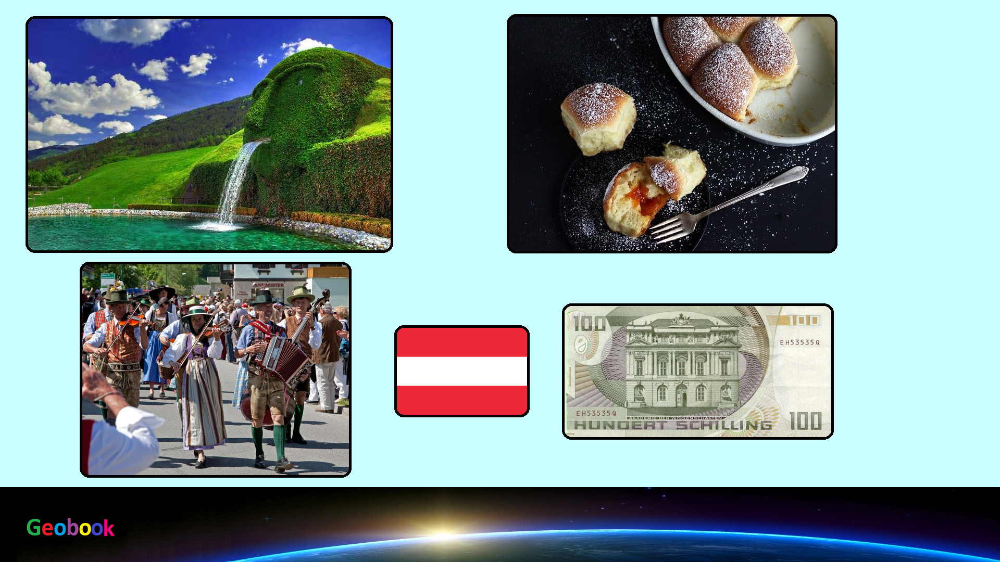

____
Климат
Климат в Австрии умеренный, переходный к континентальному, сильно зависящий от высоты.
Лето в Австрии теплое и солнечное, средняя температура в этот период составляет около +20'С (самые жаркие месяцы - июль и август). По мере подъема в горы температура падает и по ночам способна опускаться до нулевой отметки, но гораздо реже, чем в других альпийских странах - сказываются особенности местного рельефа и хорошая дневная прогреваемость склонов. К тому же в Австрии летом относительно сухо, поэтому плохая погода редко приводит к сильным скачкам температур.
Зима мягкая - температура в долинах в среднем опускается до -2'C, в горных районах - до -14'С (самый холодный месяц - январь). В силу небольшой относительной высоты большинства своих курортов Австрия довольно заметно страдает от глобального потепления, поэтому, даже несмотря на частые снегопады, практически все горнолыжные склоны снабжены мощной системой искусственного оснежения.
Осадков выпадает от 600 мм в год на востоке и севере страны, до 2000 мм в год на западных и юго-западных склонах Альп.
____
